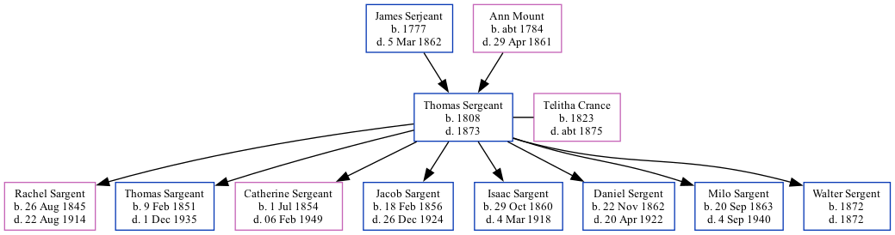

Thomas Sergeant 1808 - 1873
[ Home ] | [ Calendar ] | [ Surnames Index ] | [ Family History ]The child of James Serjeant and Ann MountThomas Sergeant, the first cousin five-times-removed on the mother's side of Nigel Horne, was born in Chislet, Kent, England in 18081,2,3, was baptized there on Jan 1, 1809 and married Telitha Crance (with whom he had 8 children: Rachel, Thomas, Catherine, Jacob, Isaac Homer, Daniel, Milo S and Walter) in Allen, Indiana, USA on Nov 13, 1841.
He died in 1873 in Hanna, LaPorte, Indiana2,3 and was buried in La Porte, Indiana, USA after 18732,3.
Parents
- James was born in 1777
- Ann M was born c. 1784
Children
- Rachel was born on Aug 26, 1845
- Thomas was born on Feb 9, 1851
- Catherine was born on Jul 1, 1854
- Jacob was born on Feb 18, 1856
- Isaac Homer was born on Oct 29, 1860
- Daniel was born on Nov 22, 1862
- Milo S was born on Sep 20, 1863
- Walter was born in 1872
Citations
- England Births & Baptisms 1538-1975 - Findmypast
- U.S., Find A Grave Index, 1600s-Current Ancestry.com Operations, Inc.
- Web: Indiana, Find A Grave Index, 1800-2012 Ancestry.com Operations, Inc.
Media
England Births & Baptisms 1538-1975 - R_883510389
Family Tree

Interactive Map
Map
Generated by ged2site. Last updated on Feb 18, 2025